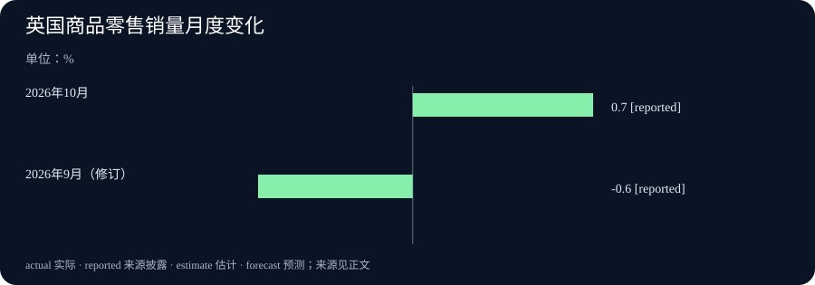

Daily Intelligence｜2026-11-21
- 新闻研究截止：2026-11-21 06:59:57（Asia/Shanghai）；固定窗口为2026-11-20 06:59:57至2026-11-21 06:59:57。英国国家统计局与意大利国家统计局在11月20日按排期发布数据，具体时刻已由官方日历列明；OpenAI MedChemBench公告、腾讯Hy官方账号和Anthropic公告只标日期，未披露小时。本文不把这些来源说成已证实处于严格24小时窗口。
- 本期新增：OpenAI公布MedChemBench药物化学评测，腾讯开放Hy4权重和安全系统卡。英国同期公布零售销售和公共财政数据，意大利建筑生产月度回升、季度仍下降。对照了11月20日和19日的实际归档；AI产品主题、数据来源和统计事实均有新增。
Today's Thesis
OpenAI公布MedChemBench药物化学评测，腾讯则开放Hy4旗舰模型权重和安全系统卡；两项变化扩大外部评估的条件，但基准成绩不等于新药研发结果，Hy4许可证也对大型模型服务商设有额外条件。英国零售销量月度反弹、借款同比增加，意大利建筑产出单月上升但季度下降；不同频率的数据不能合并成经济全面转强或转弱。
Executive Summary
OpenAI发布MedChemBench，用99道来自论文和专利的问题检验模型能否从分子结构与实验资料中解释差异、比较化合物并预测性质。OpenAI报告GPT-6.2 Astra在其最高推理设置下取得84.5%的可得分数，但单次作答、可能的训练数据重叠和没有新实验都限制了结论。
腾讯于11月20日在官方账号宣布开放Hy4权重，并同步发布安全系统卡。官方项目页显示，Hy4可理解文字、图片和视频；模型主干总参数约7700亿，每次生成激活约490亿参数，上下文长度为100万词元。系统卡和安全评估让使用者能检查厂商披露的测试范围，但并不等同独立审计。
英国国家统计局估算，10月零售销量环比增长0.7%，扭转9月下降0.6%；三个月销量较前一组三个月增长0.4%。同日公布的公共财政数据显示，10月公共部门净借款为170亿英镑，比去年同月高8亿英镑；截至10月的财年累计借款1113亿英镑，仍比去年同期低73亿英镑。短期消费回升与财政借款增加各自描述不同环节。
意大利统计局数据显示，9月建筑产出季调后环比上升3.9%，但第三季度平均产出仍比第二季度低3.1%。单月回升没有抹去前几个月的下滑；这项指数衡量生产活动，不是建筑业营业额或新开工金额。
AI Daily
OpenAI公布药物化学评测，模型还不能替代实验决策
OpenAI在11月20日公布MedChemBench，一套用药物化学研究材料检验AI模型的基准。它包括99道问题，来源于117篇论文和专利，涵盖761种分子。模型要从分子结构和已有实验结果出发，解释实验差异、比较候选化合物，并预测性质或选择下一步要测试的化合物。
OpenAI报告，在其最高推理设置下，GPT-6.2 Astra获得可得分数的84.5%，GPT-6 Astra为83.3%，GPT-6.1 Sol为82.0%，GPT-5.6 Sol为58.2%。不同题目类别的结果差异明显：模型较擅长还原分子结构和解释证据，在选择化合物和预测数值性质方面仍较弱。以上是OpenAI自己的评测，不能直接推断模型能发现新药或改善实验室决策。
这项基准的意义在于把“懂化学”拆成更具体的步骤。分子结构识别错误会改变被分析的化合物；即使结构正确，模型仍需权衡药物活性、吸收能力和代谢速度等可能互相冲突的性质。论文中的历史数据测试能检验模型是否读懂既有证据，却不能代替新实验。
OpenAI也披露了限制：研究材料可能已出现在模型训练数据中；每道题只作一次回答，未使用工具、反馈或新实验。因而，分数适合说明这套题上的表现，不能证明实际研发成功率。下一步要看独立团队能否复现结果，以及模型建议是否能在前瞻实验中提高有效候选比例。
来源：OpenAI：MedChemBench药物化学基准（11月20日；小时未披露）
腾讯开放Hy4旗舰模型权重，并公布安全系统卡
腾讯Hy团队在11月20日通过官方账号宣布开放Hy4权重，并同时发布安全系统卡。Hy4此前已作为可调用模型推出；本次新增事实是公开权重、基础模型和量化版本，开发者可自行下载评估与部署。官方仓库列出指令版、FP8量化版和预训练基础版，并说明可在支持的软件栈上运行。
Hy4是混合专家模型（Mixture-of-Experts，MoE），即每次处理输入只调用模型的一部分参数。腾讯公布的语言主干总参数为7700亿（不含视觉编码器、适配器和推理加速模块），每个词元激活约490亿参数；上下文上限为104.9万个词元。词元是模型处理文字和媒体特征的单位，不等于同数量汉字。上述规模来自厂商技术说明，不代表个人电脑就能运行完整权重。
许可证是此次开放的重要边界。腾讯Hy License 1.0以Apache 2.0为基础但增加商业条件，因此不是标准Apache 2.0。提供模型即服务的企业，若全球连续12个月总收入超过5000万美元，或产品月活用户超过1亿，须先取得腾讯书面许可；仅内部使用且不向第三方开放模型、衍生模型或输出的情形有例外。团队需要在部署或提供API前逐项核对条款。
配套系统卡披露腾讯内部和外部安全评估的范围，包括网络安全、生物安全和模型对齐。它能帮助外部读者了解厂商检查过哪些风险，但具体结论仍是报告方的评估；独立复核和真实部署中的事故数据还没有由此次发布提供。
这与MedChemBench体现两种不同变化：OpenAI提供一套可重复运行的专业评测题，腾讯开放此前已推出模型的权重和系统卡。两者都扩大了外部检查的可能性，但评测成绩不是现实研发结果，权重公开也不代表部署没有成本、许可或安全责任。
来源：腾讯Hy官方账号（11月20日宣布开放权重；小时未披露）；腾讯Hy4官方项目与许可证
Business Daily
英国零售销量回升，月度数据仍可能修订
英国国家统计局11月20日发布10月零售销售初值。经季节调整后，商品销量比9月增加0.7%；9月数据同时从原先的下降0.4%修订为下降0.6%。截至10月的三个月销量，比截至7月的三个月增长0.4%，同比增长1.7%。销量是按数量计算的购买量，不等于销售额；价格变化会让销售额和销量走出不同方向。
食品商店销量上升。统计局转述超市反馈称，政府10月22日启动“Be Ready”准备宣传后，罐头、常温奶等耐储存食品销量有所增加。非食品商店销量环比增长1.1%，服装店和艺术画廊等分项回升；汽车燃料销量则回到8月水平，因价格连续第三个月上涨而回落。来源将这些解释归于零售商反馈，并非随机实验，不能据此断定宣传活动造成全部变化。
单月数字波动通常比三个月趋势大。9月的降幅修订和8月的增幅修订也说明，首次估计可能随更多资料到齐而改变。判断家庭消费是否持续改善，应同时看销量、销售额、通胀、收入及后续修订，不把一个月的上升直接外推为长期趋势。
来源：英国国家统计局：2026年10月英国零售销售（11月20日07:00，伦敦时间）
英国10月借款同比增加，财年累计仍低于上年
英国国家统计局在同日发布的公共财政统计显示，2026年10月公共部门净借款为170亿英镑，比2025年10月多8亿英镑，增幅5.2%。这是1993年开始月度记录以来，名义金额第三高的10月读数，尚未按通胀调整。中央政府债务利息支出为112亿英镑，比去年同月多28亿英镑，其中42亿英镑来自与零售物价指数变动相关的指数挂钩国债计提。
本财年4月至10月累计净借款为1113亿英镑，比上一财年同期少73亿英镑，但比英国预算责任办公室3月月度预测高33亿英镑。这里比较的是3月预测，因为10月预测的逐月分布尚未公布；不能把它误写成相对最新10月预测的偏差。
“净借款”是公共部门支出超过收入的差额；政府同期现金融资需求是另一指标。10月中央政府净现金需求为155亿英镑，同比少62亿英镑。两项数字并不矛盾，它们衡量的资金流和公共部门范围不同。数据局提醒，英格兰银行与公共养老金部分估计仍高度初步，后续可能修订。
来源：英国国家统计局：2026年10月英国公共财政（11月20日07:00，伦敦时间）
Anthropic完成IPO与私募，募集总额不等于公司所得
Anthropic于11月20日宣布完成首次公开募股（IPO，即公司首次向公众出售股票并在交易所上市）及同步私募。公司以每股83美元发行11.03亿股A类股票；另有约2365万股由原股东出售。承销商增购权已全部行使，公开发行合计约11.27亿股，总额约935亿美元，扣除承销折扣和费用前，其中约916亿美元归公司，原股东出售所得不归公司。
公司还向七家科技和半导体企业私募约3.13亿股N类股票，购买价同为每股83美元，合计约260亿美元。公开发行与私募的毛收入合计约1195亿美元，仍是扣除费用前的金额；股票数量、发行价格和毛收入不能直接当成已经入账的净现金。
Anthropic的A类股票于11月19日在纳斯达克开始交易，20日公告确认发行交割和私募完成。正式上市给公司带来公开市场融资，也使投资者可以从定期披露中观察业务和风险；但单次募资额本身不能说明未来盈利、估值合理性或AI行业整体资本回报。该消息是公司公告，关键金额仍需结合后续监管申报和财务披露阅读。
来源：Anthropic：IPO交割及同步私募完成公告（11月20日；小时未披露）
Macro Observation
意大利建筑产出月升季降，短期反弹尚未扭转季度收缩
意大利国家统计局11月20日发布9月建筑生产指数。季节调整后，指数比8月上升3.9%；但第三季度平均产出仍比第二季度低3.1%。与去年9月相比，未经调整和按工作日校正后的指数均下降0.1%。今年前九个月，原始指数增长1.9%，按工作日校正后增长0.9%。
这些读数分别看单月、季度和年内累计，回答的问题不同。9月环比反弹是在前数月走弱之后出现，仍不足以证明建筑活动已稳定恢复。该指数反映建筑生产量的变化，不代表行业收入、利润、房屋成交量或新项目数量。数据为初步值，方法和后续资料可能带来修订。
和英国零售销量一样，月度反弹要放进更长时间窗口理解；但建筑生产和零售购买量属于不同国家、行业与统计体系，不能将两个环比数字当成可直接比较的强弱排名。对企业而言，持续的订单、开工和就业信息仍是判断景气度的重要补充。
来源：意大利国家统计局：2026年9月建筑业生产（11月20日10:00，罗马时间）
Signal Dashboard
| 指标 | 统计期与口径 | 结果 | 读数边界 |
|---|---|---|---|
| 英国零售商品销量 | 2026年10月，季调环比 | +0.7%；9月为−0.6% | 初值可能修订；数量不等于销售额 |
| 英国公共部门净借款 | 2026年10月，名义金额 | 170亿英镑；同比+8亿英镑 | 非通胀调整值；部分分项初步 |
| 英国财年累计净借款 | 2026年4月至10月 | 1113亿英镑；同比少73亿英镑 | 高于3月预测33亿英镑，10月月度预测尚不可比 |
| 意大利建筑生产指数 | 2026年9月，季调环比 | +3.9%；第三季度环比−3.1% | 单月反弹与季度下降同时成立 |
Deep Insight
今天的几组数字看起来方向不同：英国零售销量在9月下跌后反弹，政府10月借款却比去年同月增加；意大利建筑业单月上升，但整个第三季度仍然收缩。它们并不冲突，因为衡量的是不同主体、时间段和活动。零售销量记录消费者购买商品的数量，公共借款记录政府收支差额，建筑指数观察行业生产活动。把这些读数简单平均，或挑一项代表“经济状态”，都会丢掉最重要的边界。
更有用的读法，是先区分变化发生在哪一层。零售数据给出月度消费量的初步反弹，并指出食品囤货、非食品回升和燃料回落等分项；后续修订可能调整幅度。公共财政数字则显示10月单月借款高于去年，但财年累计仍低于去年同期。债务利息增加和指数挂钩国债的物价调整解释了部分月度支出上升，却不能单独说明未来财政路径。财政判断还需要看税收、支出构成、经济增长和预算预测的口径。
意大利建筑数据说明了为什么观察窗口会改变结论。9月单月环比增长3.9%听起来强劲，但第三季度平均值仍下降3.1%，因为前两个月的水平拖累了季度平均。若只看最新一个月，就会把反弹写成复苏；若只看季度总量，又可能忽略边际改善。之后几个月的订单和生产数据能帮助判断这是低基数反弹，还是趋势真正转向。
两条AI新闻都要区分“测评成绩”和“现实效果”。MedChemBench用既有论文与专利设计问题，但OpenAI承认训练数据可能见过相关材料，而且每题只答一次，没有工具或新实验。Hy4开放权重让开发者可独立检查模型，却不自动解决部署成本、许可证和安全风险。外部复测与真实任务结果仍待观察。
Anthropic的募资规模显示资本市场对大型AI企业的融资能力，但公开发行和私募所得必须分开。约1195亿美元是两部分毛收入合计，并非全部由Anthropic作为公司收入取得；其中约916亿美元来自公司公开发行，原股东出售的部分归卖方，费用也尚未扣除。把发行规模当作AI投资回报或公司现金余额，会把股票转让、发行融资和会计收入混为一谈。后续季度申报才会给出资金用途、经营成本和收入结构等更具体信息。
可检验的判断包括：MedChemBench能否由独立团队复现，分数能否预测前瞻实验中的候选选择质量；Hy4能否在不同硬件和软件环境中稳定运行，外部安全评估是否发现系统卡未覆盖的问题；英国零售回升是否延续到之后几个月；公共财政的单月利息压力是否在累计数据中持续显现；意大利建筑业是否能把9月反弹转成季度增长。每项判断需要对应的后续指标，不能用新闻数量或公司宣传代替。
Tomorrow Watch
- MedChemBench能否由独立团队复现，以及后续前瞻实验是否检验模型建议对真实候选筛选的帮助。
- Hy4权重开放后出现的独立安全评估、实际部署成本与许可证适用边界。
- 英国11月零售销量和公共财政下一期数据，以及10月数据是否被修订；注意债务利息和净现金需求的定义。
- 意大利建筑业第四季度产出能否延续9月环比增长，避免把一个月反弹当成趋势。
- Anthropic后续监管申报中的净募资额、发行费用、私募股票权利和资金用途。
One Chart
英国商品零售销量月度变化（季节调整后环比，%；官方披露初步值）

10月销量回升0.7%，但9月降幅同时修订为0.6%；应与三个月增长0.4%的较平滑读数一起观察。单月销量可能波动并修订。
Quote of the Day
原文：The fault, dear Brutus, is not in our stars,
But in ourselves, that we are underlings. >
中文译文：亲爱的布鲁图斯，过错不在星辰，而在我们自己，因为我们甘居人下。
——威廉·莎士比亚（William Shakespeare），《裘力斯·凯撒》（*Julius Caesar*）第一幕第二场，约1599年。原文由剧中人物卡西乌斯说出；福尔杰莎士比亚图书馆将该剧创作时间谨慎标为可能在1599年，并可在第一幕第二场全文定位第227–228行。这里引用的是剧中角色台词，不把它当作莎士比亚本人的政治主张。
本期联系：卡西乌斯用这句话劝说布鲁图斯参加密谋，带有明确的说服目的，不是中立的历史判断。本刊只借它提示读者把可观察事实与解释分开：月度反弹、企业测试成绩和募资金额都有信息，但各自的统计或语境边界同样重要。这是编辑解读，不是莎士比亚在谈现代AI或经济数据。
Action Items
- 评测能否转化为研发帮助？ 关注MedChemBench独立复现和前瞻实验，分别记录结构识别、实验解释与候选选择的表现。
- Hy4适合怎样部署？ 先核对硬件、推理软件和许可证，再做独立安全测试；不要把权重下载成功等同于低成本上线。
- 英国消费是否延续回升？ 结合后续三个月销量、价格和修订数据，不用单月环比推断长期趋势。
- 借款为何变化？ 分开看利息、收支差额和现金需求，等待最新月度预测资料再做预测比较。
- 建筑业是否真正转向？ 对照第四季度生产、订单和开工资料，检验9月反弹是否延续。
- IPO资金归谁？ 后续阅读Anthropic监管申报，区分公司发行、股东出售、私募和扣费后的净收入。